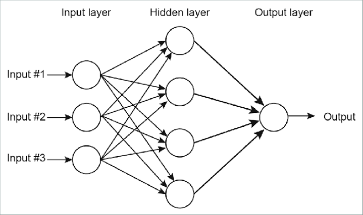

Feedforward
The feed forward model, meaning that an input arrives at the first neuron (drawn on the lefthand side of the window) and the output of
that neuron flows across the connections to the right until it exits as output from the network itself.

Fig 1: Feedforward
Node: The basic unit of computation (represented by a single circle)
Layer: A collection of nodes of the same type and index (i.e. input, hidden, outer layer)
Connection: A weighted relationship between a node of one layer to the node of another layer
W: The weight of a connection,
I: Input node (the neural network input)
H: Hidden node (a weighted sum of input layers or previous hidden layers)
HA: Hidden node activated (the value of the hidden node passed to a predefined function)
O: Outut node (A weighted sum of the last hidden layer)
OA: Output node activated (the neural network output, the value of an output node passed to a predefined function)
B: Bias node (always a contrant, typically set equal to 1.0)
Layer: A collection of nodes of the same type and index (i.e. input, hidden, outer layer)
Connection: A weighted relationship between a node of one layer to the node of another layer
W: The weight of a connection,
I: Input node (the neural network input)
H: Hidden node (a weighted sum of input layers or previous hidden layers)
HA: Hidden node activated (the value of the hidden node passed to a predefined function)
O: Outut node (A weighted sum of the last hidden layer)
OA: Output node activated (the neural network output, the value of an output node passed to a predefined function)
B: Bias node (always a contrant, typically set equal to 1.0)
Visualisation of feedforward MLP
No. of Output: 3
No. of Inputs: 3
No. of Hidden Layers: 3
No. of Hidden Neurons: 4